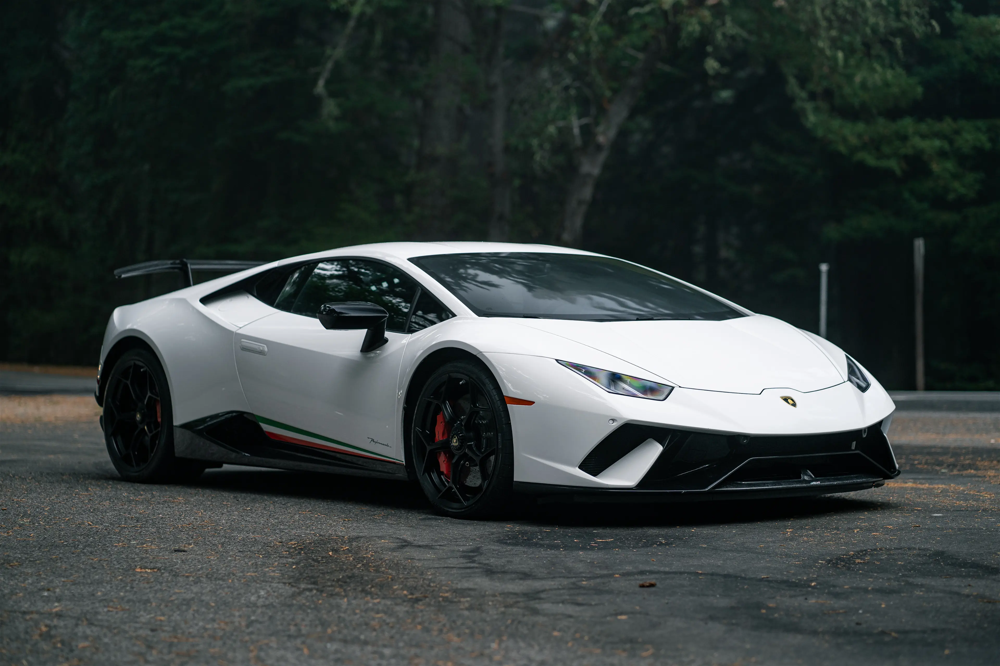
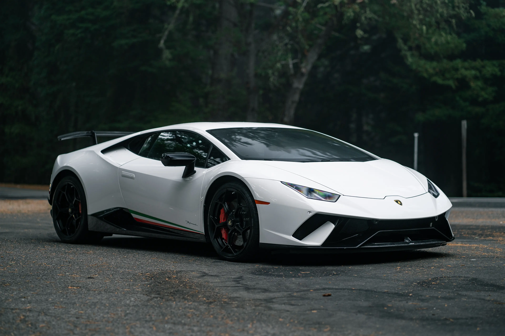

Lamborghini Aventador Svj
Unveiled at the 2018 Pebble Beach Concours d'Elegance, the SVJ (Super Veloce Jota) is a track-focused iteration of the S and an improvement over the SV, with 900 units produced.[citation needed] The 6.5-litre L539 V12 engine used in the entire Aventador lineage was reworked and to generate a maximum power output of 770 PS (566 kW; 759 hp) at 8,500 rpm and 720 N⋅m (531 lb⋅ft) of torque at 6,750 rpm. Measures such as extensive use of carbon fibre, and titanium in the exhaust system brought the weight down to 1,525 kg (3,362 lb), giving the car a power-to-weight ratio of 0.5 hp/kg. The SVJ could accelerate from 0–100 km/h (0–62 mph) in 2.8 seconds and 0–200 km/h (0–124 mph) in 8.6 seconds with a top speed of over 352 km/h (219 mph).
 
